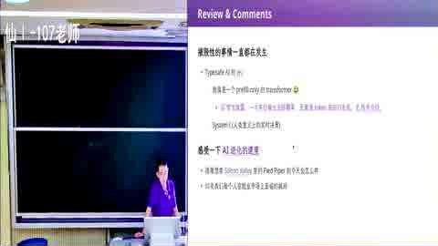
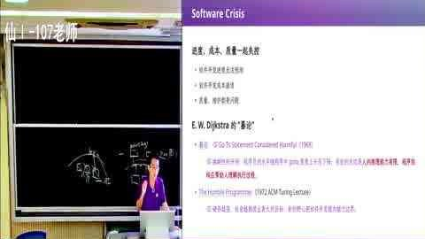
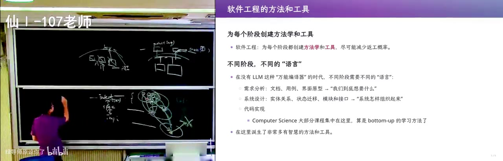

软件工程的来龙去脉 [05-Raw/26生成式软件工程/NJU]
从 1968 年北约会议和 Royce 那篇被误读成「瀑布」的论文讲起：软件工程为什么诞生、它的 first principle 是什么，以及 AI 已经能写代码的今天，这套智慧还剩多少。
一句话结论
软件工程诞生于 intent（想要什么）→ specification（写下来的规格）→ implementation（代码）三者之间的 gap，而需求本身是拍脑袋想出来、客户自己也说不清的，所以全部方法学的本质只有一条：把发现问题的时间点提前。AI 抹平了「自然语言对不齐」和「checklist 不好查」，但这个 gap 还在，所以这门课仍然成立。
官方章节时间轴
| 时间 | 章节 |
|---|---|
| 00:00–17:37 | 新闻播报 |
| 17:37–39:01 | 回到软件开发 |
| 39:01–1:15:06 | 从软件危机到软件工程 |
| 1:15:06–1:39:59 | 软件工程给世界带来了什么 |
分段大纲
| 序号 | 章节 | 核心内容 |
|---|---|---|
| 1 | 课前新闻：实时决策模型 | 百毫秒级小模型玩 Doom，打开「实时决策」赛道 |
| 2 | AI 七十年加速史 | 1956→2024 时间轴；新 scaling 维度是「数据分布工程」 |
| 3 | 基模厂与学术界的裂缝 | RSI 闭环、建实验室即涨能力、peer review 面临崩溃 |
| 4 | 回到软件：三件东西的 gap | MVP 策略、标签打印机与扫描仪的 self-service |
| 5 | 软件公司会消亡吗 | 驱动与 APP 沦为接口，豆包手机与阿里 agent 化 |
| 6 | 软件工程为什么诞生 | 1960s 硬件贵、客户不懂、需求拍脑袋、三失控 |
| 7 | 三篇一手文献 | Dijkstra 1968 goto、1972 Humble Programmer、Royce 1970 |
| 8 | 学科沉淀与语言光谱 | checklist、traceability、契约、QuickCheck、UML、形式化 |
| 9 | 知识获取方式变了 | 一手文献取代教科书的有损压缩 |
章节详解
1. 课前新闻：百毫秒的实时决策

画面解读： 课前新闻：百毫秒级只吐一个决策 token 的模型玩《Doom》，打开实时决策赛道；随后是七十年加速史，判断新 scaling 维度是「数据分布工程」；再讲基模厂在搭递归自我改进闭环、每建一个实验室能力就上一台阶，学术界的投稿—评审链正被取代。
- ⭐核心：某模型（自称 system one）把《Doom》的游戏状态转成一个 JSON 喂进去，毫秒到百毫秒级吐一个决策 token，「不说人话但能干事」。
- ⭐核心：技术不算全新，但这次把赛道正式打开——实时微表情、有人感的数字人、哄婴儿睡觉，都建立在「延迟够低」上。
- 🔧实操：讲者判断它是一次只出一个 token 的 transformer，经过特定微调/训练，介于大语言模型和老式决策树之间。
- ⚠️易错：别把它当范式革命，真正的变量是延迟，不是参数量。
💡 核心提炼：延迟降到 100ms 量级，AI 才能进入「人感」交互；这条赛道比的是速度，不是智商。
2. 七十年加速史与「数据分布工程」
- ⭐核心：AI 生成的时间轴——1956–60 感知与规划机器走出实验室 → 70–90 年代寒冬 → 1997 搜索算法首次击败人类世界冠军 → 2012 AlexNet → 2016（讲者现场看直播）→ 2017 Transformer → 2020 GPT-3 → 2022 ChatGPT 爆发 → 2023 多模态、语音 → 2024 Sora。
- ⭐核心：讲者对 GPT-6 的判断——OpenAI 摸到的门道是数据分布工程：基模已经够强，再注入一个它没见过的领域数据做强化学习，所有任务会一起变好。
- ⭐核心：模型训练顺序是 语言 → 数学 → 多模态 → 空间感知；人相反，是世界模型 → 语言 → 数学 → research taste。顺序不同，但只要有足够数据和 scaling law，两边都成。
- ⚠️易错：直觉上「多学一个领域要多喂数据」，讲者的观察相反——每加一个新领域，需要的数据反而更少，因为不必从零重建。
💡 核心提炼：scaling 的第二维度不在参数量，而在「什么分布的数据、什么比例、什么时候注入」。
3. 基模厂与学术界的裂缝
- ⭐核心：OpenAI 的 Noam Brown 式判断：模型短板是品味，即「对接下来该做什么的直觉」不够好；模型被训成 prompt 的舔狗，还有 reward hacking 倾向，会用最快最脏的方式交差。
- ⭐核心：可验证 / 不可验证的边界没那么清楚。数学看着可验证，但自然语言问题形式化本身就有 gap——视频里那个「证明 P=NP，其实证明了一等于一」的笑话就是这么来的。
- ⭐核心：基模厂在搭 RSI（递归自我改进）闭环，Anthropic 甚至要建 wet lab 做生物实验；每新建一个实验室，模型能力就上一个台阶。
- ⚠️易错：小规模实验对大厂「没意义」，不等于实验无用，而是你碰不到那个数据分布。
💡 核心提炼：「随机想 idea → 投稿 → peer review」这条链，正在被「有钱就能往飞轮里插一个新领域」取代。
4. 回到软件：三件东西之间的 gap
画面解读： 回到软件：意图、规格、实现之间的 gap 才是世纪难题，所以先做能扔的最小原型逼出没想清的意图；再讲标签打印机加扫描仪的自助服务——设备抽象成 scan/print 接口，让 AI 打一张问一句、第十五次调准加热深度；APP 则沦为接口。
- ⭐核心：intent / specification / implementation 三者之间的 gap，是软件成为世纪难题的根因，也是这门课反复讲的那句话。
- 🔧实操：MVP——先做能扔的最小原型，用 AI 生成 slop，成本低、随时丢弃，目的是逼出 intent 哪里没想对，再迭代几个版本。
- 🔧实操：讲者自建「标签打印机 + 扫描仪」的 self-service：把设备抽象成 scan / print 接口（类比 OS 设备驱动 read/write/ioctl），上层软件只依赖接口，彻底甩掉厂商那个难用的软件。
- ⭐核心：热转印打印机有个没人懂的「加热深度」参数，AI 就打一张、问「淡了还是浓了」，打到第 15 次调对；接个摄像头连人都能省掉。
- ⚠️易错：不要一上来写通用驱动；他是先让它能跑，再抽出接口。
💡 核心提炼：稳定接口 + 可验收的结果 + 一轮轮试错，就是 AI 时代最便宜的软件工程。
5. 软件公司会消亡吗
- ⭐核心：标签打印机的成本大头是软件（Windows 驱动 + Mac 驱动），AI 把这块打到接近零，「卖硬件送软件」的细分市场逻辑被改写。
- ⭐核心：豆包手机把 APP 抽象成接口，交给 computer use 去调；阿里把旗下服务整合进 agent。APP 沦为「点外卖的接口」，只留一个查数据的 API 给 agent。
- ⚠️易错：千问被评「生不逢时」——产品推得太早、算力和模型速度不够，不是方向错。
💡 核心提炼：软件形态从「给人用的界面」变成「给 agent 用的 API」，这一层被替代后，产业链上的人得重新找位置。
6. 软件工程为什么诞生（1960s）

画面解读： 讲软件工程为何诞生：硬件贵、码农贵，客户根本不知道计算机能干什么，需求全靠拍脑袋；再精读三篇一手文献——Dijkstra 的 goto 讲的是可读性、图灵奖演讲说机器越强意图越多，Royce 那篇是瀑布出处却恰在批判瀑布，共同原则是把发现问题提前。
- ⭐核心：1960 年硬件极贵（一间房一台机器）、码农也极贵（高智力工种），写机器码/汇编要先画流程图。
- ⭐核心：客户根本不知道计算机能干什么——政府官员、要送人上月球的 NASA 工程师、要飞控系统的人，都说不清想要什么。1968 年《Boys' Life》9 月号就在畅想「终端即时判分、针对薄弱环节辅导、按自己节奏学」，今天也没完全实现。
- ⭐核心：软件需求是拍脑袋想出来的、高度定制化。选课系统就是活例子：先到先得还是抽签、还是按专业保留？先修课是硬限制还是能被特批？毕业前最后一秒能不能开口子？
- ⭐核心：桥梁、炼钢受自然规律约束，只能增量改进；软件没有这个约束，它是物理世界需求在信息世界的投影，gap 天生更大。
- ⚠️易错：不是程序员不努力，是需求方自己也没想清楚那些 corner case。
💡 核心提炼：软件工程的起点不是技术问题，而是「人的意图无法无损翻译成机器行为」。
7. 三篇一手文献
- ⭐核心：Dijkstra 1968《Go To Statement Considered Harmful》——被简化成「goto 有害」，其实讨论的是可读性；Linux 内核里
goto release逐个释放资源，正是「正确使用 goto」的反例。 - ⭐核心：Dijkstra 1972 图灵奖演讲《The Humble Programmer》——永远写 OJ 小程序不会有软件危机；机器越强，承担的 intent 越多，不确定性越大。他提 nicely factored solutions，还说「保守力量主要来自教育机构与舍不得重写旧程序的用户」。
- ⭐核心：Royce 1970《Managing the Development of Large Software Systems》——瀑布模型的出处，但原文是批判瀑布的，被称作「被误读最严重的文章」。
- ⭐核心：Royce 的两个 first principle：① 测试是整条链上第一个「物理事件」，在它之前全是不能运行的文档，所以人一定会糊弄；② 因此一切补救的本质都是把发现问题的时间点提前。
- ⭐核心：do it twice / preliminary pilot program 就是今天的 MVP；敏捷是 doing it infinitely many times，第一个版本哪怕只打印一句 hello 也算数；TDD 是同一原理的现代版。
- ⚠️易错：教科书把瀑布讲成「应该这么做」，一手文献讲的是「千万别这么做」。
💡 核心提炼：所有方法学都在服务一句话——让关键假设尽早遇到证据。
8. 学科沉淀与语言的光谱
- ⭐核心：讲者用 CS 视角重述 Royce：把每个阶段看成程序、产物看成数据，就得到一张 data dependency graph。瀑布等于一次性铺开大量依赖，错一处全盘返工；MVP/敏捷等于小步 BFS/DFS 往外扩。
- ⭐核心：checklist、决策表、文档两两交叉审查、需求追踪矩阵（traceability）——这些「没有一行代码的人文工具」实实在在降低返工概率，让需求和设计、代码两两对得上。
- ⭐核心：语言形式化程度是一条光谱：自然语言文档 → checklist → 设计 DSL → 编程语言 → 形式化证明，每一格都在补 gap。
- ⭐核心：契约式编程（Eiffel，1986 前后）把 require / ensure（前置、后置条件）写进语言；QuickCheck 让人描述 property，工具生成输入去找反例。
- ⭐核心：UML 的野心是对齐自然语言世界，类图、时序图有确定语义；但它的前提是「自然语言无法和形式语言对齐」，这个前提被大模型打破了，所以讲者判「UML 已经死了」。
- 🔧实操：讲者让 AI 通读 796 页 UML spec，按 50 页切分带 overlap、多 subagent 提取，最后总结成「哪些 intent 必须定死、哪些可以流动」。
- ⚠️易错：UML 死了不等于它的 first principle 死了；「哪些语义必须钉死」这个问题一直在。
💡 核心提炼：每一层中间语言都在减少语义漂移；AI 只是把最上面那层自然语言的漂移也压掉了。
9. 知识获取方式变了

画面解读： 把学科沉淀摊开：checklist、需求追踪矩阵这些无代码工具都在降返工；形式化程度是从自然语言到形式化证明的一条光谱，契约式编程把前置后置条件写进语言；UML 的前提被大模型打破所以判它已死，但「哪些语义必须钉死」这个问题还在。
- ⭐核心：过去查一手资料几乎不可能，只能靠教科书做「有损压缩」；今天可以直接读原文，还能让 AI 追出「教科书一级级曲解」的传递链。
- ⭐核心：老师不必再做统一压缩——每个人的损失点不同，可以只给「发现点 + 原文」，让人自己做属于自己的压缩。
- ⚠️易错：一手文献也可能把人带歪，一个方向想错就能带歪全人类，所以要交叉验证。
💡 核心提炼：AI 让「读原文」从奢侈品变成默认操作，代价是判断责任回到你自己身上。
关键数字与例子
| 数字 / 例子 | 出处与含义 |
|---|---|
| 100–200ms | 实时决策模型的目标延迟，够做微表情与「人感」交互 |
| 1956–1960 | 感知与规划机器走出实验室的起点 |
| 70–90 年代 | 人工智能寒冬 |
| 1997 | 搜索算法第一次击败人类世界冠军 |
| 2012 / 2016 / 2017 | AlexNet / AlphaGo（讲者现场看直播）/ Transformer |
| 2020 / 2022 / 2024 | GPT-3 / ChatGPT 爆发 / Sora 发布 |
| 1957 | 一位程序员结婚登记时「程序员」还不算职业，被登记成理论物理学家 |
| 1968 | 北约软件工程会议；Dijkstra 的 goto 文章；《Boys' Life》9 月号畅想 |
| 1970 / 1972 | Royce 那篇论文 / Dijkstra 图灵奖演讲 |
| 15 次 | 调热转印「加热深度」参数时 AI 反复打标签的次数 |
| 796 页、18%、5.3 元 | UML spec 页数；读它花掉 699 套餐五小时额度的 18% |
| 2500 并发 | 「你手上马上就有 2500 个码农」，管理半径变了 |
| 30 年 → 10–15 年 | 讲者旧预言「assert 证不出就不许编译」，如今改口 |
速查卡
| 概念 | 一句话 | 标记 |
|---|---|---|
| intent / spec / impl | 三者之间的 gap 是软件的根本难题 | ⭐ |
| MVP | 先做能扔的最小原型，用来逼出没想清的 intent | 🔧 |
| do it twice | Royce 的 pilot program，1970 年版的 MVP | ⭐ |
| 测试是第一个物理事件 | 之前全是不可运行的文档，人必然糊弄 | ⭐ |
| 把发现问题提前 | 所有方法学的共同本质 | ⭐ |
| goto considered harmful | 讲的是可读性，不是禁用 goto | ⚠️ |
| 瀑布模型 | 出自一篇批判瀑布的论文，被误读最严重 | ⚠️ |
| traceability | 需求↔设计↔代码两两可追溯，用交叉检验换信心 | 🔧 |
| design by contract | require/ensure 写进语言，前置后置条件 | 🔧 |
| UML | 用半形式语言对齐语义，讲者判「已死」但 principle 还在 | ⚠️ |
我的判断
这讲的锋利之处在于把「软件工程史」讲成了「一个 gap 的反复修补史」，而不是罗列方法论名词——它敢直说瀑布模型是后世教科书造出来的反派，敢把 Royce 原文里的 pilot program 直接认成 MVP，也敢承认 UML 这套 796 页的宏大工程已经失去前提。但它最值得警惕的恰恰是自己的叙事惯性：一边用「数据分布工程」和「斩杀线上升」制造紧迫感，一边又用「AI 抹平了自然语言对齐」轻松判掉几十年积累，这两句其实互相拆台——如果对齐真的被解决了，那 traceability、checklist、契约式编程的价值就不该只是「原理还在」，而应该被重新定价。另外，讲者用自己的一台标签打印机和一次 APK 逆向就推出「软件公司彻底消亡」，样本太小、结论太快；真实世界里的软件成本大头是长尾需求、合规和运维，不是驱动。真正立得住的是那句不煽情的判断：读一手文献比读教科书省事，因为经典记录的是这个领域最初也最根本的问题——这条对做工程的人比任何预测都值钱。